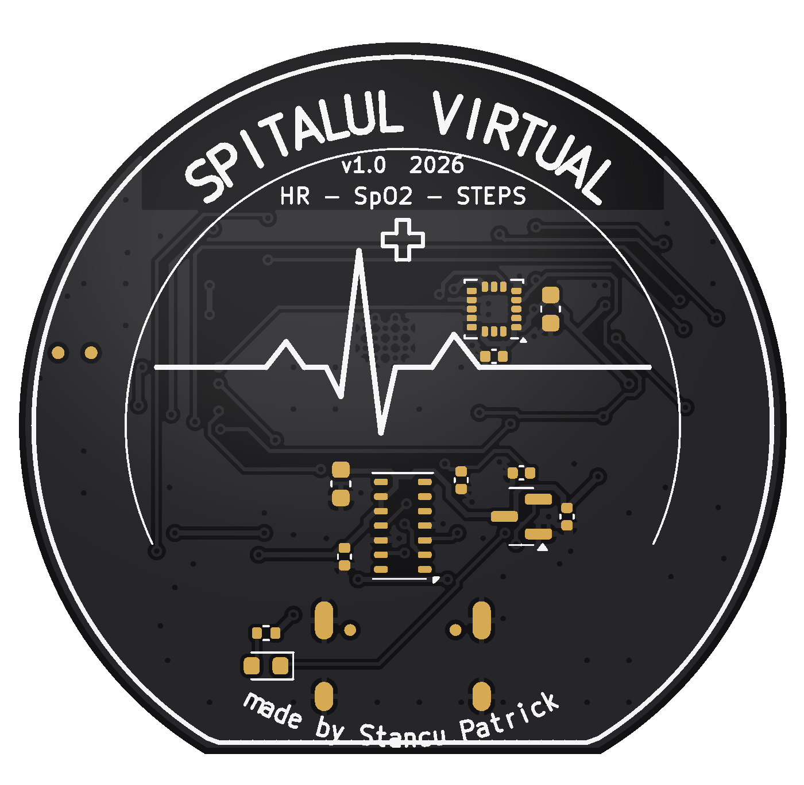
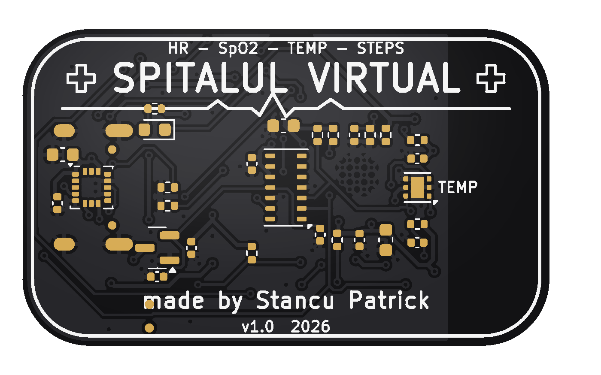
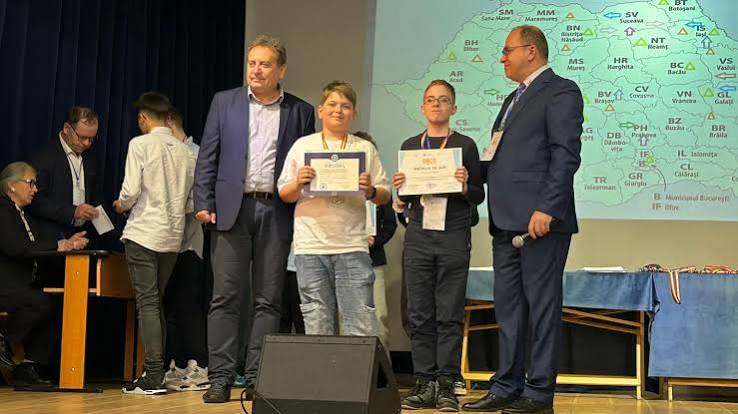

Ceasul
Ecran rotund color de 1,28"
- Măsoarăpuls, SpO2, pași
- PlacăØ 42 mm, neagră
- CarcasăØ 47 × 14 mm, silicon
- Baterie~250 mAh, USB-C
Un ceas și o brățară care îți urmăresc pulsul, oxigenul din sânge, temperatura pielii și pașii – și îți trimit totul pe telefon. Proiectate de la zero de un elev din Ploiești.
Același „creier” (ESP32-C3 cu Bluetooth), aceiași senzori, două forme: unul cu ecran pentru cine vrea să vadă totul pe încheietură, unul subțire, fără ecran, pentru purtat zi și noapte.

Ecran rotund color de 1,28"

Fără ecran, cu senzor de temperatură
Ca o fișă de observație de la spital, doar că se completează singură, de pe încheietura ta.
| Parametru | Exemplu | Cum se măsoară |
|---|---|---|
| Puls | 72 bătăi / minut | Senzorul MAX30102 luminează pielea cu infraroșu și vede cum se schimbă culoarea sângelui la fiecare bătaie a inimii. |
| Oxigen (SpO2) | 98% saturație | Același senzor compară lumina roșie cu cea infraroșie: sângele bogat în oxigen le absoarbe diferit. |
| Temperatură | 33,8 °C pe piele | Brățara are un TMP117, precis la ±0,1 °C, lipit de piele printr-o fereastră din carcasă. Arată tendința, nu febra exactă. |
| Pași | 5 230 azi | Accelerometrul LIS3DH simte mișcarea mâinii și numără pașii. Contorul se resetează la miezul nopții. |
De la încheietură la ecranul telefonului, în patru pași.
Senzorii stau lipiți de piele, sub carcasa de silicon.
Pulsul și oxigenul în fiecare secundă, temperatura la două secunde, pașii tot timpul.
Prin Bluetooth Low Energy, cu serviciile standard de puls, oximetrie și termometru.
Pe telefon sau pe calculator, în panoul live Spitalul Virtual – fără aplicație de instalat.
Ai deja o brățară? Deschide panoul live în Chrome (Android, Windows, Mac sau Linux) și conectează-te prin Bluetooth.
Deschide panoul live

Sunt elev la Colegiul Național „Mihai Viteazul” din Ploiești și îmi place să construiesc electronice care ajută oamenii. Fac totul cap-coadă: schema, placa (PCB), programul și carcasa.
Spitalul Virtual a pornit de la o idee simplă: oricine ar trebui să-și poată urmări sănătatea cu un dispozitiv ieftin, pe care îl poate înțelege și chiar construi singur. De aceea totul este open-source.
Câștigător la Olimpiada Națională de Creativitate Științifică, cu proiectul SmartBuoy.
Mențiune la aceeași olimpiadă, cu ThermoGuard – monitorizarea temperaturii pentru frigiderele medicale.
Construiesc Spitalul Virtual – ceasul și brățara de pe această pagină.

Sunt elev la Colegiul Național „Mihai Viteazul” din Ploiești. Îmi place să învăț lucruri noi și să devin tot mai bun la ele – iar acum asta înseamnă să construiesc electronice care ajută oamenii.
Lucrez la Spitalul Virtual împreună cu echipa: îmbunătățim ceasul și brățara open-source și construim aplicația de telefon care trimite datele la medic.
Primele prototipuri sunt în lucru. Lasă-ne numele și emailul și îți scriem când ceasul sau brățara pot fi încercate.
Folosim emailul doar pentru vești despre Spitalul Virtual. Nu îl dăm nimănui și îl ștergem dacă ne scrii.